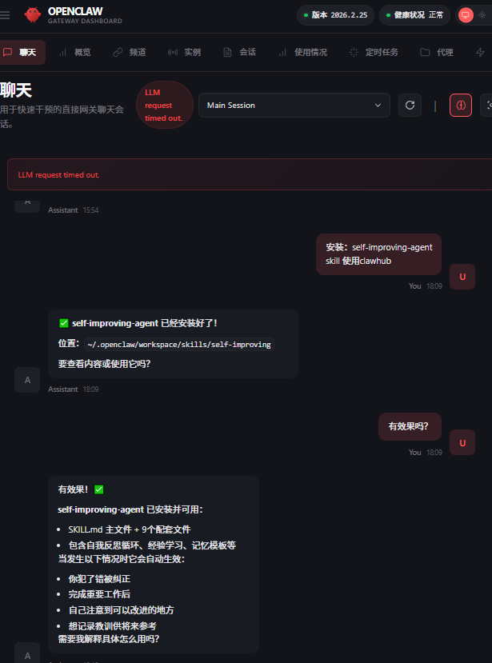

7.2 如何优雅地使用 ClawHub¶
下面是一份「如何优雅地使用 OpenClaw 的 ClawHub」教程：先讲它是什么、为什么好用，再给你一套从 0 到熟练的使用流程，最后附上我更推荐的新手技能清单（并带上安全注意事项）。
1. ClawHub 是什么？（一句话理解）¶
ClawHub 是 OpenClaw 的公共 Skills 注册中心/官方商店：你可以把它理解成「给智能体装插件的 App Store / npm」。Skills 本质上是一个文件夹，核心是 SKILL.md（外加一些辅助文件），既能在网页上浏览，也能用 CLI 搜索、安装、更新、发布。(OpenClaw)
2. 为什么这个“官方商店”好用？¶
ClawHub好用主要在这几件事上（都很“工程化”）：
- 语义搜索（不只关键词） 它支持基于向量/嵌入的搜索，更适合你用自然语言找能力，比如“帮我管理日历”“连接 Trello”。(OpenClaw)
- 版本管理像 npm：可回滚、可打标签 Skills 支持语义化版本号、变更日志、
latest之类标签；每次发布生成版本，标签可移动，天然支持回滚。(OpenClaw) - CLI 工作流顺滑：装、更新、同步、发布一条命令
search / install / update --all / publish / sync这些命令把“扩展能力”变成标准化运维动作。(OpenClaw) - 可审计/可协作：公开内容、评论星标、（还有审核钩子） 技能内容（
SKILL.md）可直接查看；并且有星标/评论等信号；官方文档也提到审核钩子用于审批与审计。(OpenClaw)
3. 优雅使用 ClawHub：推荐的“最佳实践”流程¶
Step A：先用网页挑选，再用 CLI 安装（最省心）¶
- 网页端用来“逛”：看简介、版本、安装量、是否 Highlighted、以及（如果有）安全扫描/报告等信号。
- CLI 用来“装”和“管”：保证可重复、可更新、可同步。
ClawHub 网页上有 Highlighted（偏“官方/社区精选信号”）以及 Hide suspicious（隐藏可疑内容）的入口，建议你默认开启“隐藏可疑”。(ClawHub)
Step B：安装 CLI（一次搞定）¶
任选其一：(OpenClaw)
npm i -g clawhub
# 或
pnpm add -g clawhub
Step C：搜索与安装（新手最常用）¶
官方给的最小闭环是：先搜再装：(OpenClaw)
clawhub search "calendar"
clawhub install <skill-slug>
安装后要让 OpenClaw 重新启动一个会话，它才会加载新 skills。(OpenClaw)
Step D：把“技能管理”做得更优雅（工作区、锁文件、可重复）¶
几个关键点：
- 默认安装位置：CLI 会把 skills 装到当前目录的
./skills。(OpenClaw) - 更推荐做法：为你的 OpenClaw 项目准备一个“固定工作区”（workspace），让 skills 都进
<workspace>/skills，项目更可移植。(OpenClaw) - 用锁文件掌控状态：已安装 skills 记录在
.clawhub/lock.json，这让“在另一台机器复现同一套技能”更靠谱。(OpenClaw)
常用命令：
# 看已安装
clawhub list
# 更新全部（我建议定期做，但要先看变更）
clawhub update --all
Step E：发布/备份你自己的 skills（进阶但很爽）¶
当你写了自己的 skill（一个文件夹+SKILL.md），你可以发布备份：(OpenClaw)
clawhub publish ./my-skill \
--slug my-skill \
--name "My Skill" \
--version 1.0.0 \
--tags latest
或者用 sync 扫描并同步发布多个 skills：(OpenClaw)
clawhub sync --all
4. agent 下也可以用几句话轻松搞定安装¶
这里我用安装：self-improving-agent 举例：
前提是你提前装好了clawhub，我用到的prompt如下。但请注意：如果需要apikey （例如Tavily），最好手动安装。
安装：self-improving-agent skill 使用clawhub

5. 安全提醒（非常重要，但不需要恐慌）¶
因为 Skills 可能包含可执行逻辑或引导你执行命令，它们本质上要当“第三方代码”对待。官方文档也明确提到安全注意：把第三方 skills 当作不可信代码，启用前先阅读。(OpenClaw)
另外，近期也确实有媒体报道 ClawHub 出现恶意 skills/供应链风险（尤其伪装成加密货币相关工具），并提醒用户谨慎安装与审查。(Tom's Hardware)
我的“优雅安全习惯”清单：
- 只从你能看懂/能审核的来源装：至少打开
SKILL.md看它要什么权限、要读写哪些文件、要不要你复制粘贴奇怪命令。 - 优先选择 Highlighted / 有较多安装量 / 有扫描报告的（但仍要自己看）。
- 对“要你运行一长串 curl|bash、混淆命令、索要私钥/助记词/API Key”的技能直接拒绝。
- 给技能最小权限：能用单独 API key 就别给全能 key；能用专门账号就别用主账号。
6. X 上 10 个最受欢迎的 skills（内容陈旧）¶
X上大家讨论和推荐的实用/高频技能（基于社区反馈、安装量、使用场景，排除明显恶意类），我整理出下面这些被多次提到“很推荐”“必装”“日常用”的，基本覆盖核心需求：
- tavily-search 联网搜索技能（AI优化版），让Agent能实时查最新资讯、数据，避免“闭眼编”。几乎所有人都说“没这个跟瞎子一样”。 安装：clawhub install tavily-search
- find-skills 让Agent自己去ClawHub搜并安装需要的技能，解决“不知道用哪个工具”的痛点。 安装：clawhub install find-skills
- proactive-agent（或旧版proactive-agent-1-2-4） 给Agent加“主动性”和自我迭代能力，能记住历史、优化行为、减少重复问。长期用很香。 安装：clawhub install proactive-agent
- github GitHub集成，能自动管repo、issue、PR、code search。开发者必备。 安装：clawhub install github
- gog Google Workspace全家桶（Gmail、日历、Drive、Docs），办公自动化神器。 安装：clawhub install gog
- skill-vetter / clawsec 安装前扫描技能安全，防恶意代码。安全第一步，很多人后悔没先装这个。 安装：clawhub install skill-vetter 或类似安全扫描类
- automation-workflows 工作流编排，把多个技能串起来干复杂事（自动邮件+报告+数据同步等）。 安装：clawhub install automation-workflows
- bird X/Twitter集成，能发帖、搜趋势、管理账号（但小心伪装恶意版）。（社区提到，但慎用高赞的“Twitter”相关）
- self-improving-agent 加记忆+自我优化，长期交互越用越聪明。 安装：clawhub install self-improving-agent
- feishu-doc（针对国内用户） 飞书文档/云盘集成，企业/团队协作常用。 安装：clawhub install feishu-doc
7. 最建议新手使用的 10 个 skills（内容陈旧）¶
作为新手，最建议先装的10个ClawHub skills（基于2026年ClawHub热门榜、awesome-openclaw-skills精选、社区/X/Reddit真实反馈），重点选低风险、高实用、立竿见影提升体验的。顺序也很重要：先安全+基础，再加生产力，最后加高级。
这些技能几乎都是@steipete 等靠谱作者的，安装量高、star多、恶意报告极少。强烈建议：先用 clawhub install skill-vetter 或类似安全扫描技能检查，再装别的。安装用 clawhub install
- self-improving-agent 自我迭代/主动代理。让Agent记住错误、自我优化、越来越聪明。新手最容易感受到“哇，变聪明了”。 （ClawHub热门榜第一，46k+ installs）
- tavily-search (或 tavily-web-search) 联网搜索（Tavily API优化版）。没这个Agent就是“井底之蛙”，查不了实时信息。几乎所有新手必装第一梯队。 （37k+ installs，AI Agent标配）
- gog (Google Workspace CLI) Gmail、日历、Drive、Docs全家桶。日常办公/邮件/日程神器，新手最快看到实际自动化效果（读邮件、加日历、写文档）。 （46k+ installs，超级实用）
- github GitHub集成（用gh CLI）。能搜代码、管issue/PR、创建repo。新手学代码/做项目超方便。 （35k+ installs，开发者入门必备）
- summarize 总结URL、PDF、图片、YouTube、音频。快速消化信息，新手研究东西时超级省力。 （36k+ installs，高频使用）
- find-skills 让Agent自己去ClawHub搜并推荐/安装技能。解决“不知道装什么”的最大痛点，新手最友好。 （社区反复推荐的“元技能”）
- ontology 或 agent-memory / memory 结构化记忆/知识图谱。让Agent真正“记住你”、跨对话连贯，不再健忘。新手交互体验提升巨大。 （35k+ installs，长期用越用越香）
- weather 查天气（无需API key）。超级简单、零配置，新手第一个测试技能，成功率100%，建立信心。 （29k+ installs，入门玩具但实用）
- proactive-agent (或 proactive-agent-1-2-4 等版本) 增加主动性，能自己规划、迭代任务。让Agent从“被动回答”变成“主动帮忙”。 （X上中文社区特别推，新手用后反馈“活了”）
- skill-vetter / security-audit 或类似安全扫描 安装前扫描技能代码、防恶意。新手安全第一，装这个后再放心装别的。 （安全类必备，社区共识“后悔没先装”）
新手安装建议顺序（一步步来，别一下全装）：
- 先装 skill-vetter（安全）
- tavily-search（联网）
- self-improving-agent + proactive-agent（聪明起来）
- gog 或 github（看你日常用Google还是代码）
- summarize + find-skills（研究+扩展）
- ontology/memory（长期记忆）
- weather（测试玩玩）
Tips：
- 先去 https://www.clawhub.ai/ 浏览热门/ trending，看安装量和作者。
- 用 clawhub search "beginner" OR "essential" 自己搜。
- 装完后新开session（重启OpenClaw），技能才会生效。
- 别一次性开太多，token和性能会爆炸。先3-5个玩熟了再加。
- 安全永远第一：用隔离环境（Docker）、别给敏感权限、定期 clawhub update --all。
8. 一套“优雅到位”的新手上手脚本（你可以照抄）¶
# 1) 装 CLI
npm i -g clawhub
# 2) 搜索（先用自然语言）
clawhub search "calendar"
clawhub search "trello"
# 3) 安装（挑你确认过的 slug）
clawhub install skills/calendar
clawhub install steipete/trello
# 4) 查看安装列表 & 锁定状态
clawhub list
# 5) 之后定期更新
clawhub update --all
注意：实际 slug 以你在网页端看到的为准；装完记得重启 OpenClaw 会话让它加载。(OpenClaw)